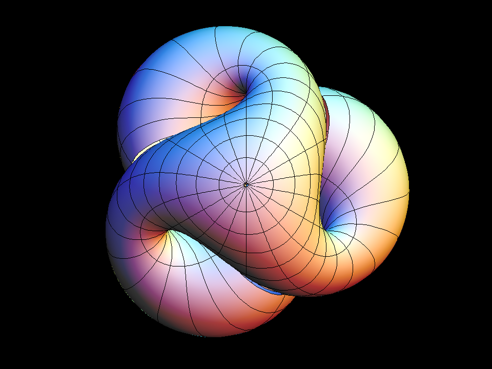

The Real Projective Plane & Boy's Surface
Introduction
In the realm of differential geometry, we work with surfaces that are often considered and assumed to be smooth with the notion of having a continuous sense of orientation given by a normal vector on the surface itself. Such surfaces with these given conditions are labeled to be an orientable surface, which gives the ability to govern a sense of direction plus orientation when “walking” on the surface. Working with orientable surfaces plays nice in differential geometry, but what happens when we try to observe a non-orientable surface? Many conditions must be met for these ideas to work, but for non-orientable surfaces, that is not always the case. One of these surfaces is “Boys Surface,” where in this paper, we will see what this surface is as a whole, its connections to the real projective plane, and why with some necessary conditions we cannot use any special theorems that we have.
Real Projective Plane
We begin by giving an introduction to the Real Projective Plane to build intuition to further explore what Boy’s Surface is and understand orientability. The real projective plane is a two-dimensional projective space where any notion of distance, angles, and measurements does not apply when observing it. Unfortunately, we cannot visualize the real projective plane, but we are able to generalize it into a Euclidean space argument. To visualize it, we consider the set of all lines that pass through the origin of the unit sphere. With the lines that are created from the real projective plane, when we place said lines onto the unit sphere with it passing through the origin, all of the lines will contain corresponding antipodal points; visually speaking, if we were to have a point on the northern and southern hemisphere, these points are opposite of each other on the unit sphere, where we denote $P= \{P,-P\}$, then we want to glue both of the points together ($P$ & $-P$), and that's what gives intuition of the real projective plane on a unit sphere. The intuition of generalizing it onto the unit sphere is one of the ways we can understand the real projective plane and its properties. With this surface having antipodal points that are essentially glued together, if we were to travel around on the unit sphere, we’d find out that there’s no sense of having the same direction throughout the whole sphere, in which there is a change of direction as if it was displayed as a normal vector through space, and that indicates that this surface is non-orientable. The non-orientability of the real projective plane is mainly due to the antipodal points that are being glued, but within every non-orientable surface, lies a mobius strip within it, and in the real projective plane, its built upon having a disc and mobius strip glued together along their boundaries, where if we remove a mobius strip from the surface, we get left with a disc. Since we provided a detailed outline of what the real projective plane is, the uniqueness of this surface is not only the abstract understanding we have of it, but it cannot be embedded into our general overview of $\mathbb R^3$, that is only if the surface intersects with itself. Self-intersecting comes through the concept of Immersion. In simple terms, if we have a surface that cannot be technically embedded into an abstract space, we can immerse the surface into the space we are studying. That’s if we can define an injective differential map for all points in our domain. To which we can do this with the real projective plane, but now we will look at Boy’s Surface which is an immersion of the real projective plane in 3-D space.
Boy's Surface
Boy’s Surface is an immersion of the real projective plane in 3-D space, which previously describes that we can embed this object into $\mathbb R^3$ but can immerse the surface into the space we are studying. Since it is an immersion of the real projective plane, the characteristics from it transfer over with the addition of other attributes as well. In which, the surface is non-orientable that self-intersects itself, to which we will understand why these characteristics transfer over. With the real projective plane being non-orientable, any immersion from a non-orientable surface will create another non-orientable surface, so since boy’s surface is an immersion of the real projective plane, it is then non-orientable. The understanding of Boy’s surface intersecting itself, deals with the antipodal points that are defined on the real projective plane; as such, when we have the antipodal points on the real projective plane that’s generalized on the unit sphere, to visualize what a point on Boy’s surface would represent, we would have the antipodal points namely $P={-P,P}$, with –P and P, we would interpret said point on Boy’s surface by gluing the two points to then become one single point which would be defined as a point on Boy’s surface. With the antipodal points highlighting the thought of self-intersection of it being the same point on Boy’s surface, one big showcase of self-intersection uses the tools of being a non-orientable surface, such as containing a mobius strip within it. Boy’s surface contains a mobius strip from the nature of being a non-orientable surface, to which if we stretch the boundary of it and glue those boundaries together, we get boy’s surface all together.
Connection
With the deep description of what the real projective plane is and Boy’s surface, which is an immersion of the real projective plane, we can get to answer why an idea from differential geometry does not work too nicely plus the reason it fails with these non-orientable surfaces. We will consider using the Gauss Map, which in hindsight is a continuous map that maps every point on a surface S to its unit normal vector on the unit sphere. Since we cannot use the whole real projective plane to use the Gauss Map, if we consider taking a piece of the real projective plane that is not the entirety of it, then we can understand why we need strict rules for the surfaces we work on. Let’s take a point on the portion of the real projective plane we took out; since we get antipodal points on the real projective plane, if we then apply the gauss map, the antipodal points will get sent to opposite unit vectors of each other, to which on the regular use of the gauss map, it can only get sent to one unit vector that has to be positive. In this case, we can do the same process on Boy’s surface and conclude with the same argument.
